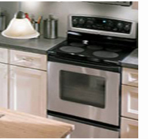
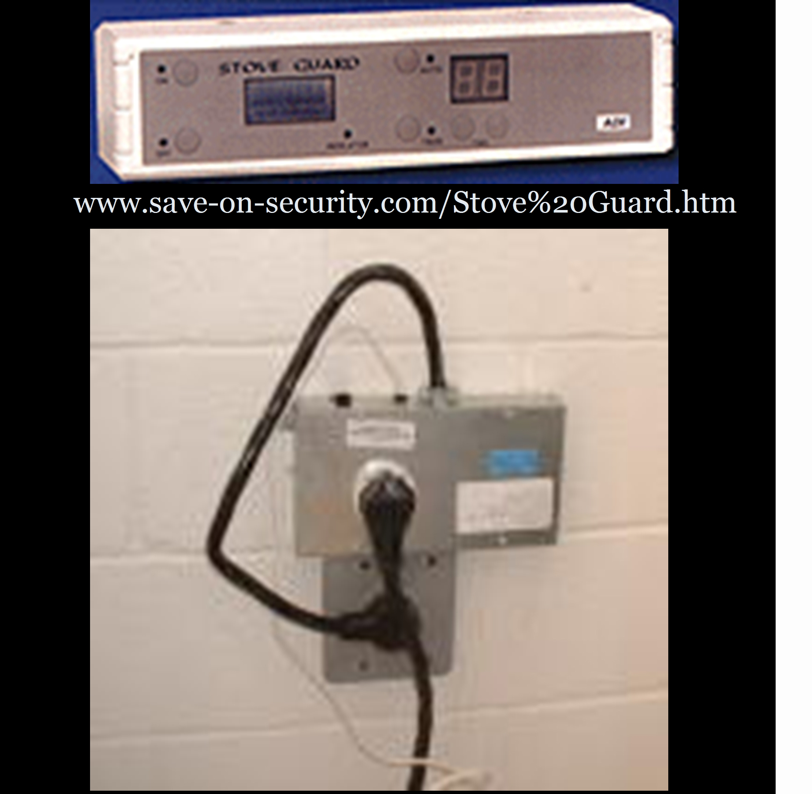

|
Home
| Profile
| Engineering Projects
| Designs
| Animations
|
STOVETOP COMMUNICATION DEVICE
State of the Art
Many products and ideas have been patented as can be seen from the results of our patent search. However, we feel that these products have not caught on with the wider public because they are either too expensive or simply too complicated for the everyday user.
|
Whirlpool Polara
Range, refrigerator, and over are networked together and remotely controlled. Users had the choice of controlling the system through a web-tablet attached to the refrigerator or via wireless web-enabled phone. The Mealtime system could turn on and off the Polara Range and set a timer for the range.
Limitations: If this Whirlpool product were on the market it would be our leading competitor. Unfortunately the Mealtime system is not marketed although the Polara Refrigerated Range is sold in stores. According to a Sears representative in West Lebanon, the device was “trying to do too much… and was overpriced”; it was too complex for the common person. Even after a price reduction, Sears only sold one Whirlpool Polara.
Stove Guard
This safety device controls the stove's electrical system. It has a sensor that monitors the user's presence in the kitchen. When the user leaves the kitchen, the internal timer starts running and shuts off the stove. Once the user returns to the kitchen, the timer automatically resets provided that the time has not already expired, thus shutting off the stove. The Stove Guard is an attachable box and mounts between the stove plug and wall outlet.
Limitations: The main problem with this product is that because this product is marketed toward the "elderly and people with disabilities" at a rather expensive price, many everyday users are reluctant to buy a Stove Guard.
OnStar At Home Pilot
Allows users to check the status of their home security system, front door, lights, etc. via the user’s cell phone, standard phone, or a website.
Limitations: Unlike the type of system we propose to create, the OnStar pilot system requires both a wireless internet connection and professional installation. As an after-market product, our prototype will be accessible to anyone with a stovetop and a cell phone, and can be easily installed by the user. Also, this system is not currently on the market and OnStar has no explicit plans to introduce the system to the market at any point in the near future.
|
|